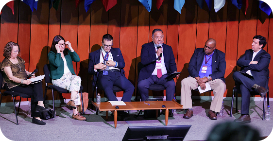
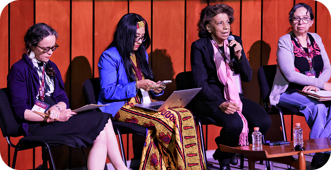

Congreso
Actividades
Complementarias
Conferencias
Articulación de los saberes
científicos y la acción política.
Ver fotos y videos
Reconstrucción y
desarticulación de los
derechos sociales en Argentina.
Ver fotos y videos
La reconstrucción
posneoliberal y el Estado de Bienestar
Social en Brasil
Ver fotos y videos
Destrucción neoliberal y
reconstrucción de los derechos sociales en
México. Perspectivas transformadoras
desde el ISSSTE
Ver fotos y videos
El rol de los intelectuales en
un Estado de Bienestar
Ver fotos y videos
Pautas para deconstruir la
ideología neoliberal como sentido común y
socialconformismo
Ver fotos y videos
Mesas
“Formación de cuadros y participación
ciudadana: ejes articuladores del Estado de
Bienestar”
Ver fotos y videos
Inauguración
Dr. Martí Batres Guadarrama, Director General
del ISSSTE
Dr. David Kershenobich, Secretario de Salud
Ariadna Montiel, Secretaria del Bienestar
Dra. Rosaura Ruiz Gutiérrez, Secretaria de
Ciencias, Humanidades, Tecnología e
Innovación
Dra. María Elvira Concheiro Bórquez,
Subsecretaria de la Mujer
Dr. José Moya, Representante de la Oficina
OMS/OPS en México
Mtro. José Pedro Kumamoto Aguilar,
Secretario General de la Conferencia
Interamericana de Seguridad Social
Conferencia: Articulación de los saberes
científicos y la acción política.
Dr. Carlos Montaño, Uruguay

Mesa: Rutas para el bienestar
Coordina: Dra. Berenice P. Ramírez López
(UNAM)
Dr. David Martínez Mendizábal (REMIPSO)
Dr. José Moya Medina (OPS/OMS)
Dra. Liz Odelnis Cruz Rodríguez (Médico
cubana en misión en México)
Mtro. Elí Evangelista Martínez (ISSSTE)
Mtro. Francisco Calzada Lemus (UNAM)
Mesa: Formación de
cuadros y
participación
ciudadana: ejes
articuladores del
Estado de Bienestar
Coordina: Dra. Lucía Álvarez Enríquez (UNAM)
Mtro. José Pedro Kumamoto Aguilar (CISS)
Dr. Pastor Castell-Florit Serrate (ENSP, Cuba)
Mtro. Juan Gerardo López Hernández (ISSSTE)
Dra. Ana Rita Castro (UNAM)
Dr. Luis Gerardo Rodríguez Lozano (UANL)

Mesa: La mujer
como agente
transformador
en el Estado de
Bienestar
Coordina: Dra. María Elvira Concheiro Bórquez
(Secretaría de la Mujer)
Dra. Estela Gispert Abreu (ENSP, Cuba)
Dra. Odeth Santos Madrigal (CLACSO)
Dra. Virginia García Sánchez (UNAM)
Dra. Ana Rita Castro (UNAM)
Dra. Julie-Anne Boudreau (UNAM)
Conferencia: Reconstrucción y
desarticulación de los
derechos sociales en Argentina.
Dra. Graciela Rosso, Argentina
Congreso Día 2
Conferencia Dr. Emir Sader
Conferencia Dr. Juan Gerardo
Conferencia Dra. Juana Suárez
Conejero
Conferencia Dr. Marcos Roitman
Rosenmann